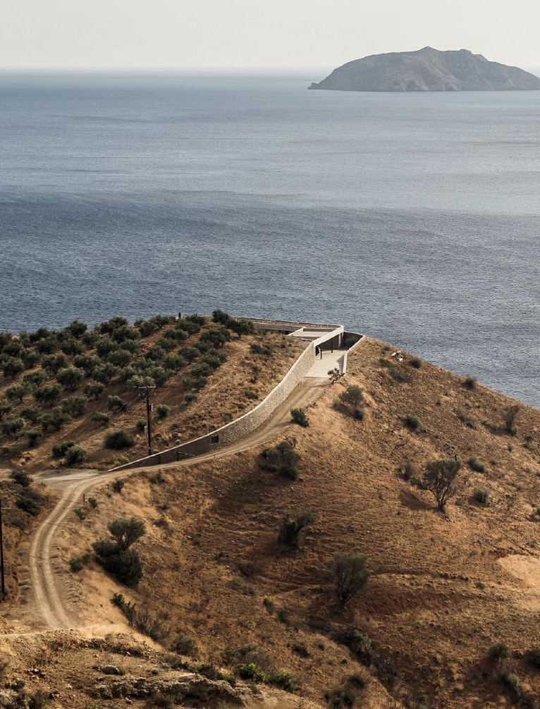

Lines of Earth: Architecture and the Spirit of Terracing
The Journal of Terraced Landscapes volume 2, issue 1, pp. 104–121 (2026) · Cite this article
- 77 views
- 56 downloads
- DOI10.5281/zenodo.18269696

Abstract
Terraced landscapes are living cultural and ecological systems shaped over centuries, integrating geology, climate, and local resources. Their preservation depends on active inhabitation, cultivation, and care. Architecture mediates between historical forms and contemporary needs, addressing functional, ecological, and social challenges while articulating the identities of places and communities.
This paper identifies generative principles—such as water flow, wall orientation, and material logic—that guide interventions enhancing habitability and preserving cultural and environmental integrity. It also proposes archetypes for sustainable, contextually grounded architecture in terraced landscapes, offering a design framework that bridges traditional knowledge and contemporary architectural practice.
Keywords
- rural design
- stones
Terraced landscapes constitute a form of living heritage whose preservation cannot rely on restrictive or purely regulatory approaches. As Magnaghi observes, “these are not Etruscan vases or archaeological artefacts which can be preserved in a glass case in a museum or in any kind of enclosure” (2013, p. 131). Rather, their continuity depends on a renewed form of rural awareness—one that requires time spent within terraced landscapes, their inhabitation, observation, and appreciation, and ultimately their active cultivation and care.
Within this perspective, architecture plays a pivotal role, as it can mediate between the inherited forms of the historical landscape and the demands of future transformations. Architecture operates as a temporal device: it carries traces of the past into the present, while simultaneously renewing them through contemporary practices and needs. In terraced environments, this mediation is not merely formal but deeply structural, engaging issues of use, maintenance, and adaptation.
Rejecting the spectacularization that often characterizes contemporary architectural imagery, this paper adopts a Mediterranean-oriented approach in which architecture is understood not only as a means of articulating the identities of places and communities, but also as an operative tool for addressing concrete spatial, environmental, and social challenges. Terraced landscapes are interpreted as spatial frameworks within which new architectural interventions can be integrated to enhance inhabitants’ quality of life— improving flexibility, comfort, connectivity, and access to services—while remaining consistent with the underlying logic of the land. In this sense, architecture becomes both a cultural and ecological agent, contributing to the continuity and transformation of terraced landscapes as living systems.
Function
Architectural intervention within terraced landscapes requires a thorough understanding of the functional logic governing these systems. Any new construction is inevitably inserted into a highly refined agricultural and environmental framework—one that has evolved over centuries through the integration of geology, climate, topography, and locally available resources. Terraced landscapes therefore operate as complex and resilient systems, in which spatial form and environmental performance are inseparable.
The apparent visual harmony of Mediterranean terraced landscapes often conceals the intrinsic fragility of their geological and climatic conditions. As Braudel incisively notes, the Mediterranean has never been a freely given paradise, but rather a territory shaped through persistent human effort against steep slopes, shallow and friable soils, and extreme climatic variability (Braudel, 1985, p. 8). Intense rainfall episodes rapidly trigger erosion, while prolonged dry seasons impose severe constraints on cultivation. Mountainous terrains further limit accessibility and arable land, reducing cultivable surfaces to narrow strips of soil carved into otherwise inhospitable slopes.
Each terraced landscape is thus the outcome of a centuries-long process of transformation, in which human communities constructed a primordial yet highly effective form of linear architecture to stabilize and inhabit steep terrains. Through the systematic use of drystone walls, impervious slopes were converted into stable, durable, and productive surfaces. These interventions generated distinctive cultural landscapes, capable of expressing the morphological, geological, technical, and social specificities of individual communities. Terracing materializes the terrain itself as a constructed section: a geometric reorganization of relief that effectively translates contour lines into built form, often extending for hundreds of kilometres.
The widespread diffusion of terraced systems across the Mediterranean basin can be attributed to both the prevalence of mountainous topographies and the region’s distinctive climatic regime. Despite local variations, the Mediterranean climate exhibits a remarkable degree of coherence, shaped by the alternating influence of Atlantic depressions and Saharan air masses. Long, dry summers dominated by north-easterly winds contrast sharply with autumn and winter periods characterized by intense rainfall, creating cyclical stresses that terraces are specifically designed to mitigate. Within this context, dry-stone walls perform multiple, interrelated functions. First, they provide effective soil protection against erosive rainfall by reducing slope gradients and slowing surface runoff, thereby limiting soil loss and supporting biodiversity. Second, they enhance water capture and retention. The transformation of sloped terrain into flat or gently inclined platforms increases infiltration capacity and ensures a more even distribution of water across cultivated surfaces. Dry-stone construction further amplifies this function through its permeability and thermal behaviour: the absence of mortar allows walls to act as atmospheric vapour condensers, particularly during hot and humid summer periods. As temperatures rise, water vapour penetrates the stone mass; during nocturnal cooling, condensation occurs and moisture is released into the soil beneath the walls. Empirical evidence supports this mechanism. Research conducted in the Negev Desert has shown that ancient dry-stone structures enabled the cultivation of olive trees and vineyards in conditions of extreme aridity, relying almost exclusively on atmospheric moisture condensation. The orientation of plant root systems toward nearby stone walls further confirms the role of these structures as localized water sources. Such findings have even prompted new interpretations of historical and biblical references to water and fertility emerging “from the rocks,” understood as metaphors grounded in practical environmental knowledge. Dry-stone walls also constitute an integral component of sophisticated water management systems. Terraced plots are interconnected according to gravity and hydrological flow, using contour lines to collect, channel, and distribute rainfall efficiently across the landscape. Wall sections are often trapezoidal, with a wider base and a narrower top, enhancing structural stability while directing water inward rather than downslope. Concave wall tops and carefully oriented stone surfaces further guide rainwater into the soil profile, transforming the wall into a hydraulic device that counteracts erosive forces. Finally, terraces facilitate cultivation by improving soil structure. Stones removed during wall construction reduce surface obstacles and produce a finer, more compact soil granulometry capable of retaining moisture.
Within this functional framework, inhabited spaces are not external additions but integral components of the system. Buildings participate in water regulation, microclimatic control, and protection from wind and solar exposure, operating in continuity with agricultural terraces in a manner analogous to ecological organisms adapting to their environment.
Form
“The slopes are arranged into terraces, supported by dry-stone walls built with stones obtained from clearing the land of rocks. These structures follow the natural topography and at times become true constructions — spatial frameworks that reconfigure the landscape, which comes to resemble a form of quasi-suburban fabric” (Sereni, 1961) Dry-stone walls in terraced landscapes adhere to a geometric and rigorous system dictated by agricultural practices, soil characteristics, orientation, and cadastral constraints. Within this system, walls not only delimit space but also shape its perception, constraining polarized structures and defining spatial hierarchies. Understanding the principles governing stone walls requires superimposing an ordered structure, such as enclosed fields, onto the maximum slope lines. This overlay generates complex patterns in which drainage networks, irrigation channels, paths, and natural features converge into a coherent spatial logic (Figs. 1-2).
The constructive and spatial archetype of terraced walls is predominantly compressive. Architecture exploits the hardness, mass, and permanence of stone, which, as Frampton observes, “has left its mark on the world for eternity” (1995, p. 430). Rooted on rocky outcrops and assembled into walls of varying height, stone structures modify the morphology of the landscape, redefining both its material and perceptual qualities. Dom Hans van der Laan emphasizes this transformation: “The first datum is the horizontal and limitless datum of the earth. As we stand vertical in this space, our experience is horizontal and, with only the horizon as a false boundary, it is difficult for us to come to terms with ourselves within this space. To adapt natural space, we create a new space for ourselves by drawing the secondary architectonic datum, the wall from the earth…” (2000). In this sense, walls operate not merely as enclosures but as instruments that orient movement, influence perception, and establish a dialogue between natural and built space.
The experiential effect of a wall is closely related to its height. When lower than eye level, a wall functions as a trace; when higher, it becomes a boundary, producing what Bachelard terms a sense of restlessness, a curiosity about the space beyond, and a perceptual engagement with the void (Bachelard, 1975). Stone walls, therefore, define circulation, create vantage points, and generate a layered perception of the landscape, integrating human activity with environmental systems.
Architectural design in terraced landscapes must engage with these rules, treating them as a grammar to be interpreted within contemporary language. Historical examples illustrate this principle. Luigi Cosenza and Bernard Rudofsky’s Villa Oro (Posillipo, 1937) exemplifies the integration of terraces and building volumes: terraced platforms function as a bridge over the slope, the building is organized on multiple levels, and railings explicitly reference nautical forms (Figs. 4-5). The metric and formal choices emphasize abstract volumetric clarity through the contrast between white plaster and stone podiums, privileging topological research over typological assertion (Irace). Similarly, Alvar Aalto’s Iran Museum of Modern Art (Fig. 10) employs the Persian terraced landscape as a model, arranging longitudinal volumes slightly angled to follow natural contours and incorporating a walled, partially covered sculpture garden, thereby amplifying the underlying terraced logic.
From this understanding, generative principles and signs for each terraced landscape can be traced. Water flows perpendicular to contour lines, guided by connecting walls, while pedestrian circulation follows stone walls via stairs and ramps. A useful analytical method involves mapping dynamic walls (water management systems) and static walls (soil and vegetation containment) onto plan representations. The intersection of these systems reveals “lines of force” (Fig. 3), a spatial network that can inform the design of new architectural interventions while respecting the existing terraced logic.
Ecology and storytelling
In terraced landscapes, walls and buildings are constructed through the accumulation of stones sourced on site. The process of extraction, transport, and transformation is minimized: the primary operation consists in selecting and positioning the stone. Construction thus becomes simultaneously a process of recovery—reclaiming inert material—and a strategy of site renovation. The soil assumes multiple roles: quarry, cultivated field, enclosed garden, and foundation for habitation. In contemporary architecture, where materials often appear thin, light, and detached from their origin, the mass and weight of stone restore a tangible sense of materiality.
The assembly of dry-stone walls follows a combinatorial logic that relies on traditional construction techniques, varying across regions and cultures. Stones of differing sizes and shapes are carefully juxtaposed to minimize voids, generating walls whose architectural specificity and expressiveness derive primarily from the inherent qualities of the material rather than surface treatment or decorative arrangement. A fundamental requirement for these walls is substantial thickness—typically 60 to 100 cm—which imparts mass, structural stability, and spatial depth to the architecture (Figs.11-12). Architecture that employs local stone becomes a narrative of the landscape itself. As Michelucci recounts regarding the Church on the Highway (Fig. 13):
“When I built the church on the Highway, I called various workers from various regions, I took them to the place where the stone was and I said: ‘This is the stone you have to work, make me a wall one meter high!’ … Someone couldn’t. They did not know the material and could not interpret it. They attempted to polish the stone, unaware that striking it with a hammer revealed its natural forms. From that action emerged the living wall” (Michelucci, 1990).
By employing stone in its natural, structural state, architects root buildings in their context and in the collective memory of the community. Nietzsche emphasizes the material’s potency: “Stone is more stone than before” (1878). Contemporary architecture often obscures this quality by enclosing stone in metal frames, slicing it into thin panels, or embedding it in superficial façades. Terraced landscapes demand a return to materialdriven design, privileging mass, masonry, and spatial logic to create architecture defined by the interplay of solids and voids, light and shadow. This approach promotes highly sustainable construction and fosters a lifestyle integrated with the environment. The Mediterranean climate, characterized by extremes and pleasant conditions, encourages the design of open, permeable spaces that disrupt strict geometrical order. Recent projects illustrate this principle: Katerina Tsigarida’s work in Andros (2003) (Figs. 6-7) and Decaarchitecture’s project in Crete (2015) (Figs. 8-9) employ simple stone volumes, voids, and minimal window fixtures, integrating architecture seamlessly with the terraces. Buildings constructed with local stone possess strong narrative and representational capacities. As Pikionis reflected:
“Yet there were moments when I felt as if my spirit had become one of the innumerable, nameless stones buried in the deep foundations, the massive walls, the architraves and vaults of the buildings I contemplated” (1958).
Through these practices, architecture acts as both an ecological and cultural agent, mediating between natural and built environments, preserving local knowledge, and narrating the historical, material, and social identity of terraced landscapes.
Conclusions A terraced landscape can survive only if people continue to walk, cultivate, harvest, consume, and live within these mountainous rural environments. More than seventy years after the initial mass migration from the countryside to the city, a slight reversal of this trend is emerging, likely influenced by recent experiences such as the pandemic and by a renewed awareness of the value of local traditions and community-based life in shaping quality of life. Supporting this transition requires that economic and social development be accompanied by a conscientious transformation of the territory, integrating social activities, infrastructure, and new employment opportunities into rural spaces.
Architectural thinking must therefore be deliberate and contextually informed, producing an architecture capable of engaging in a dialogue with the landscape. Projects must respond to community needs—including schools, housing, and services—while preserving local identity. To achieve this, design must be grounded in a comprehensive understanding of the local territory, including land use, landscape regulations, agrarian plots, water management systems, traditional construction techniques, locally available materials, and the specific patterns of everyday life. Architectural interventions can thus serve as instruments for narrating the Mediterranean terraced landscape, highlighting its spatial configurations, morphological features, and traditional cultivation practices. The distinction between architecture and terraced landscapes lies fundamentally in temporality: buildings endure across long spans of time, while stone walls are subject to continual change. The challenge for contemporary architecture is to operate at this boundary, reconciling the human need for secure shelter with the inherent precariousness of existence. Architecture must engage with the temporal dimension of terraced landscapes, preserving memory and cultural continuity, an idea beautifully symbolized by Hermes in Greek mythology, who represents transitions and the passage of time.
As Aris Konstantinidis observes: “The true work of architecture is not a monument, but a receptacle of life, a construction that lives close to its creator, following him in the various, fast-changing functions of his life, to each of which it lends a certain form, a form that is never final or finished, but that is completed as time goes by, flowering again and again into daily perfection” (1975).
In this sense, architecture in terraced landscapes becomes both an agent of cultural continuity and a framework for contemporary life, integrating ecological, social, and material concerns into a coherent and enduring spatial narrative.
References
- G. Bachelard (1975) The poetic of space, it. Ed. La poetica dello spazio, Dedalo, Bari
- L. Boglium (1993) Mazera_Gramac^e_muri a secco, Bookeditore, Bologna
- F. Braudel (1985) The Mediterranean: Land, Sea, History in UNESCO, The Courier
- C. Cantelli (1994) Misconosciute funzioni dei muretti a secco, in "Umanesimo della pietra", Martina Franca, n. 9
- I. Celeschi (1989) Sull' architettura spontanea nell'hinterland etneo, Catania
- K. Frampton (1995) Reflections on the scope of the tectonic. In: Studies in tectonic culture, John Cava (ed.), MIT Press, Cambridge [Mass.]
- V. Gregotti (1966) Il territorio dell'architettura. Feltrinelli, Milano
- D. Hans van der Laan (2000) Architectonic space, it. Ed. Lo spazio Architettonico, in D. Hans der Laan. Le opere e gli scritti, Electa, Milano
- W. Keller (1955) La bibbia aveva ragione
- A. Konstantinidis (1975) Elements of self-knowledge. Towards a new Architecture.
- F. Irace (2006) Parentesi mediterranea, in A. Buccaro, G. Mainini, Luigi Cosenza oggi, Luigi Cosenza Oggi 1905/2005, Clean Edizioni, Napoli
- P. Laureano (2001) Atlante d'acqua, Bollati Boringhieri, Torino
- P. Laureano (1993) Giardini di pietra: i sassi di Matera e la civiltà mediterranea. Bollati Boringhieri, Torino
- A. Magnaghi (2013) The role of historical rural landscapes in territorial planning, in M. Agnoletti, Italian Historical Rural Landscapes, Environmental History 1, Springer Science+Business Media, Dordrecht
- P. Matvejevic (2000) Breviario mediterraneo, Garzanti, Milano
- G. Michelucci (1990) interview, Domus 720
- J. Nicod (1692) Muretti e terrazze di coltura nelle regioni carsiche mediterranee, in "Itinerari speleologici", n. 6
- F. Nietzsche (1878) Human, All Too Human: A Book for Free Spirits
- D. Pikionis (1994) Autobiograpical Notes, in Dimitris Pikionis, Architect 1887-1968 'A Sentimental Topography', Architectural Association, London
- O. Ribeiro (1972) Il Mediterraneo. Ambiente e tradizione, Mursia, Milano
- E. Sereni (1961) Storia del paesaggio agrario, Laterza, Bari
Rights and permissions
Open Access. This article is licensed under a Creative Commons CC BY 4.0 license, which permits use, sharing, adaptation, distribution and reproduction in any medium or format, as long as you give appropriate credit to the original author(s) and the source and indicate if changes were made.
About this article
Cite this article
De Pasquale, G. (2026). Lines of Earth: Architecture and the Spirit of Terracing. The Journal of Terraced Landscapes, 2(1), 104–121. https://doi.org/10.5281/zenodo.18269696
- Published
- January 2026
- Issue
- Volume 2, Number 1
- Journal
- The Journal of Terraced Landscapes, ISSN 2754-7612 (Online)
- Archive
- Zenodo record 18269696
- rural design
- stones